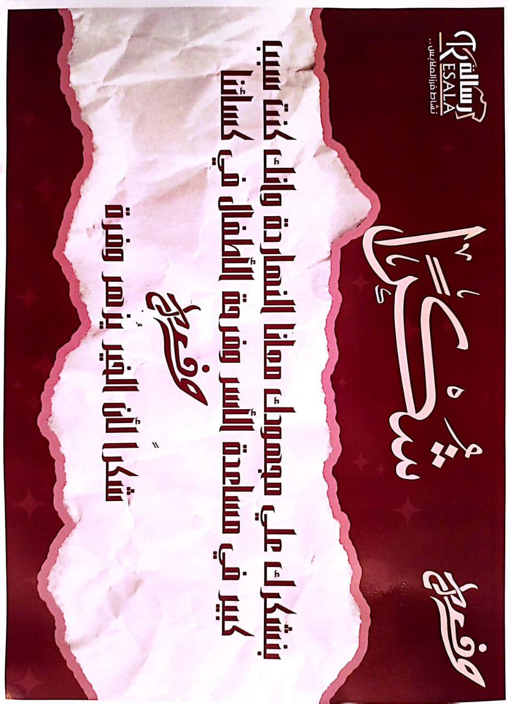

Volunteer Experience & Recognition
Official certificates and recognition from organizations I've contributed to
Ather Initiative
Vice Head, Graphic Design Committee

Recognized for exemplary dedication and invaluable contributions to Ather. Served as Vice Head of the Graphic Design Committee, leading design initiatives and supporting multiple volunteering works that positively impacted the community.
"Certificate of Appreciations" for dedicated service and community impact
Cultural Organization
Volunteer Contributor

Volunteer participation in cultural and community initiatives aimed at promoting heritage and community engagement. Contributed design expertise and organizational support to enhance program impact and reach.
Recognition for volunteer support in cultural preservation and community development programs